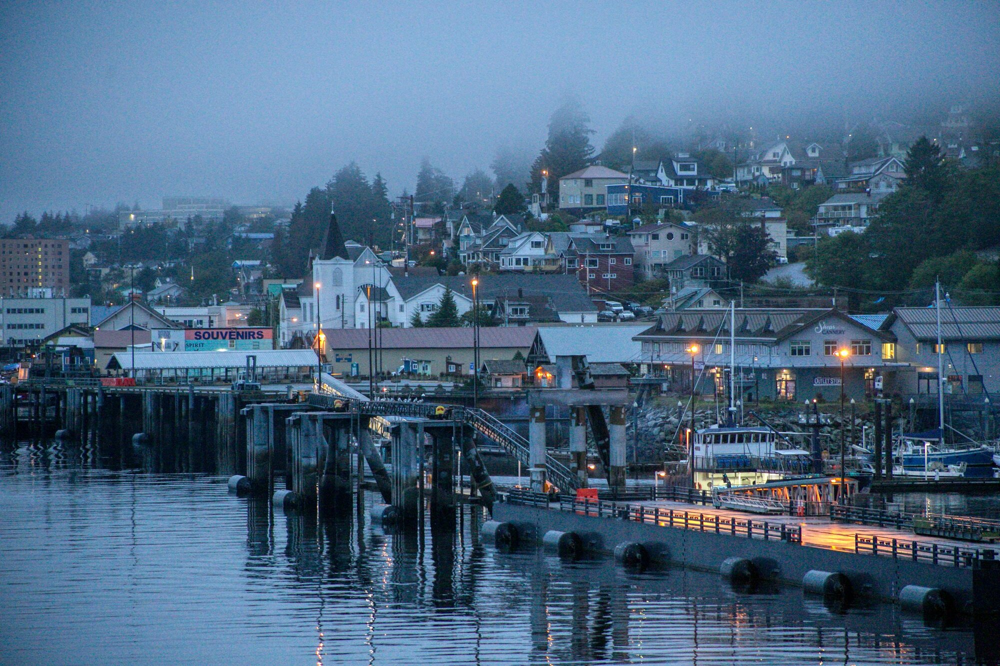
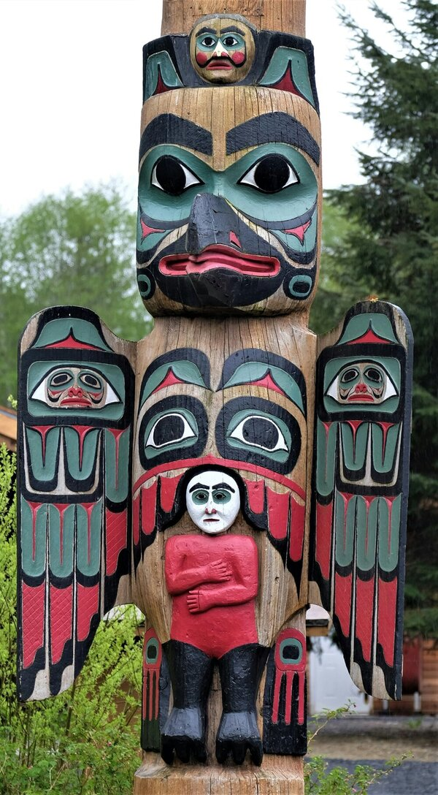

Ketchikan
Ketchikan was founded on August 25th, 1900 and is populated by about 8 thousand people!


×

Also known as "the salmon capital", fishing has never been more of a thrill than in Ketchikan! But the outdoor excitement doesn't end there. Ketchikan is settled in the heart of the Tongass National Forest, the largest national forest in the United States!
Further exploration of Ketchikan tells us more about the Native Alaskan culture nestled within. This area was largely affected by the Tlingit, Haida, and Tsimshian tribes. Totem poles showcased in areas like Saxman Totem Park, Totem Bight State Park, and Potlatch Park, and the Totem Heritage Center give us more insight into the Native life.